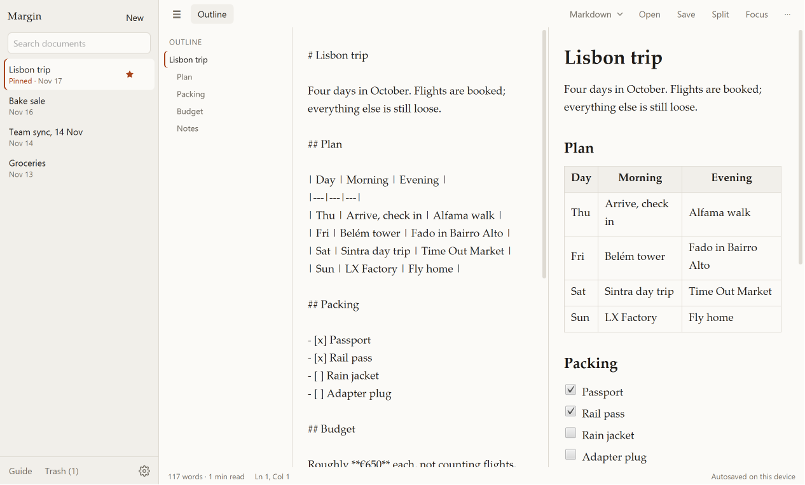
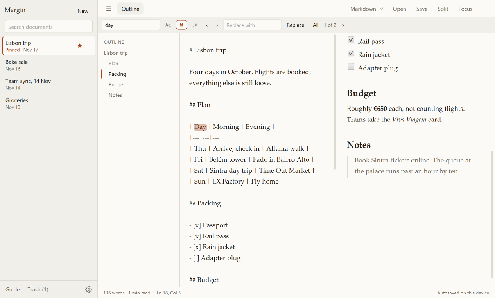
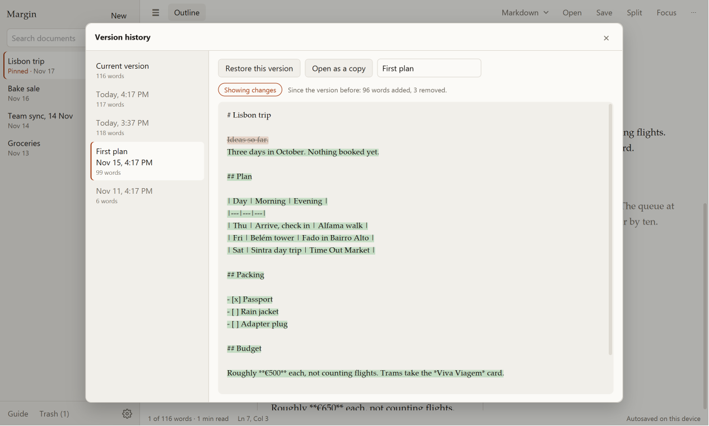
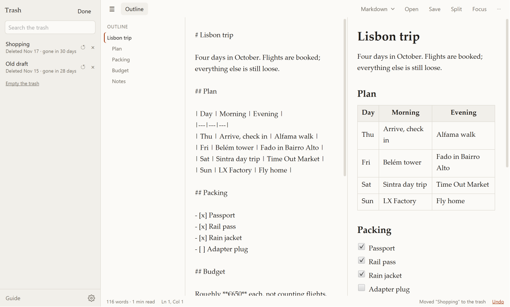
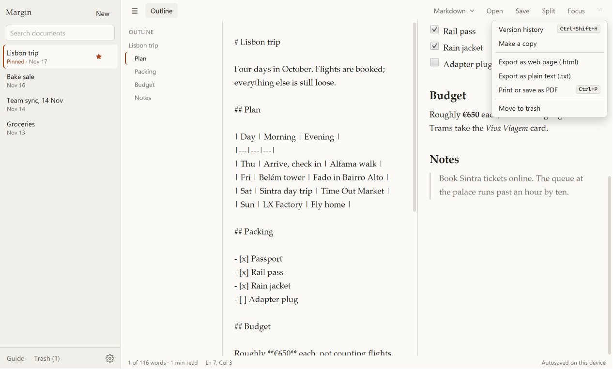
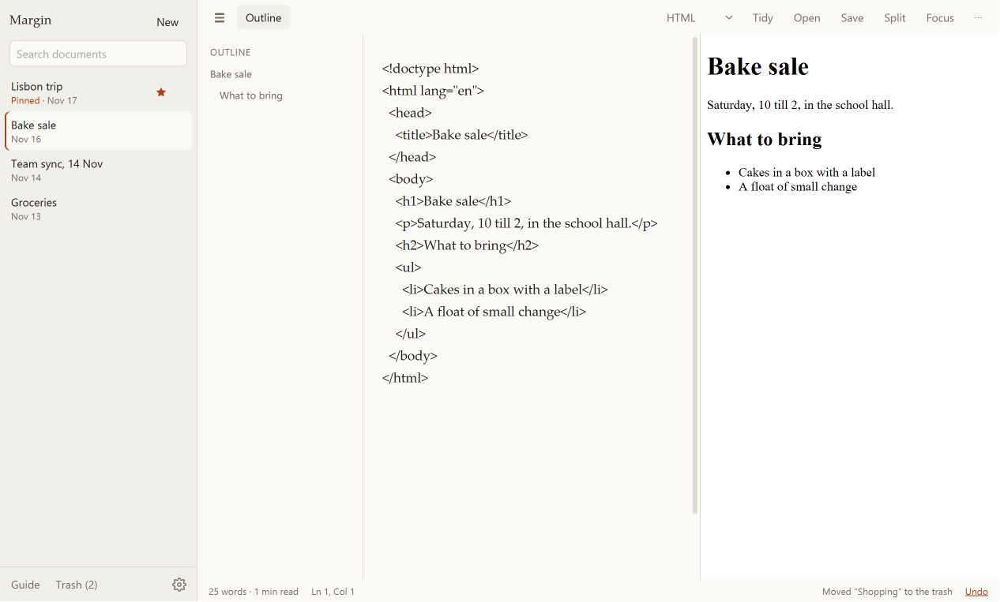
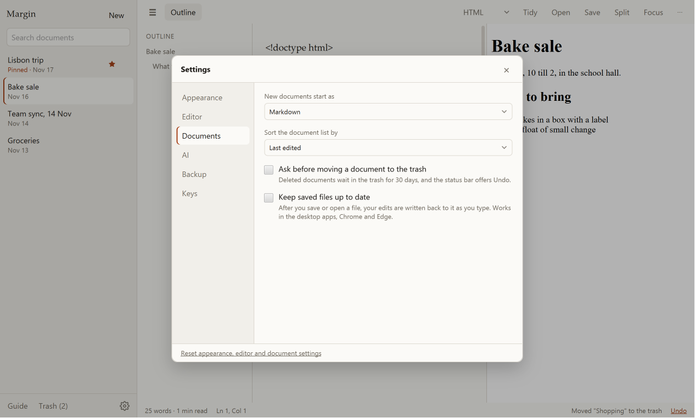

A quiet text editor for the browser and the desktop. Open the editor

Margin keeps a list of documents in the sidebar. The first line of a document is its title. Everything is saved automatically as you type, on this device. Nothing is sent anywhere, and there is no account.
The view button in the toolbar cycles through Write (plain text), Split (text beside a formatted preview) and Read (preview only). Focus hides everything except the page. The ⋯ button holds version history, copies, export and printing. The gear at the bottom of the sidebar opens Settings (Ctrl ,).
The status bar counts words and reading time. Select some text and it shows how many of the words are selected; hover over the count for characters and lines.
Outline in the toolbar (Alt O) lists the document's headings beside the text. Click one to jump there; in Split and Read views the preview follows. The heading you are writing under is marked. In Markdown a heading is a line starting with #; in HTML it is <h1> to <h6>. Plain text has no headings, so the button is hidden for it.

Ctrl F opens the find bar. It shows how many matches there are, and Enter and Shift Enter step through them (“2 of 5”). Three switches narrow the search:
| Switch | Does |
|---|---|
Aa | Match upper and lower case exactly |
W | Whole words only |
.* | Regular expressions. In the replacement, $1, $2… insert the captured groups |
All replaces every match in one step, and keeps a version first, so both Ctrl Z and version history can take it back.

Margin keeps earlier versions of every document on this device. A version is saved when you open a document, every few minutes while you edit it, and before anything rewrites it in one go (Tidy, AI, Replace all, changing Markdown to HTML, restoring a version). Open it from ⋯ → Version history or Ctrl Shift H.
Version history lives with your documents in this browser or app; a backup file holds the documents but not their history. Settings → Backup shows how much space it uses and can clear it.

Deleting a document (the × beside it, or ⋯ → Move to trash) moves it to the trash, and the status bar offers Undo for a few seconds. Trash at the foot of the sidebar lists deleted documents: ↺ puts one back, × deletes it forever. Anything left in the trash is deleted after 30 days.
The star beside a document pins it to the top of the list, whatever the sort order.

| Item | Does |
|---|---|
| Make a copy | A new document with the same text and type |
| Export as web page | A complete, styled .html file you can open anywhere or put online. Markdown is converted and indented; HTML documents are written as they are |
| Export as plain text | A .txt file with the Markdown or HTML markup taken out |
| Print or save as PDF | Prints the formatted document (Ctrl P). Choose “Save as PDF” as the printer for a PDF |
To save the document itself in its own type, use Save.

The type menu in the toolbar sets what each document is. It decides how the preview shows it and what kind of file Save writes.
| Type | Preview | Saves as |
|---|---|---|
| Markdown | Formatted (see Formatting below) | .md |
| HTML | The page itself, in a sandbox with scripts turned off | .html |
| Plain text | The text as written | .txt |
Opening a file picks the type from its extension. Changing the type of a saved document means the next Save asks for a new file, so the old one is never overwritten with a different format. A Markdown document switched to HTML is converted to HTML. In HTML documents, Tidy puts each block tag on its own line and indents it; the contents of <pre>, <script>, <style> and <textarea> are left exactly as written.
The preview understands a practical subset of Markdown:
| Type | Get |
|---|---|
# Title to ###### Title | Headings (Ctrl Alt 1–6) |
**bold** *italic* ~~struck~~ | Emphasis (Ctrl B, Ctrl I, Ctrl Shift X) |
`code` and ``` fences | Inline code and code blocks |
[text](https://…) | Link (Ctrl K) |
 | Image |
- item, 1. item | Lists. Indent by two spaces to nest |
- [ ] task, - [x] done | Checklist. Tick the boxes right in the preview |
| a | b | over |---|--:| | Table. A colon in the second row aligns the column: :-- left, :-: centre, --: right |
> quote | Block quote |
--- | Rule |
Footnotes and raw HTML are not supported in Markdown: HTML in a Markdown document is shown as text, never run. For a real web page, use an HTML document.
| Key | Does |
|---|---|
| Ctrl S | Save the document to a file |
| Ctrl O | Open a file |
| Ctrl F | Find and replace |
| Ctrl Shift H | Version history |
| Ctrl K | Make the selection a link (Markdown and HTML) |
| Ctrl B / I | Bold or italic (Markdown). Press again to remove it |
| Ctrl Shift X | Strikethrough (Markdown) |
| Ctrl Alt 1–6 | Make the line a heading of that level (Markdown). Ctrl Alt 0 makes it normal text |
| Ctrl Shift 7 / 8 / 9 | Numbered, bulleted or check list (Markdown). Again to undo |
| Shift Alt F | Tidy an HTML document |
| Ctrl J | Ask AI, once it is set up |
| Ctrl , | Settings |
| Ctrl P | Print the formatted document, or save it as a PDF |
| Tab / Shift Tab | Indent or outdent the selected lines |
| Enter | Inside a list, starts the next item. On an empty item, ends the list |
| Alt N | New document |
| Alt O | Show or hide the outline |
| Alt P | Switch view |
| Alt F | Focus mode. Esc leaves it |
| Alt L | Show or hide the document list |
On a Mac, use Cmd where this says Ctrl and Option for Alt.

| Tab | What you can change |
|---|---|
| Appearance | Theme, typeface, text size, line width, line spacing |
| Editor | Spell check; wrap long lines or scroll sideways; continue lists on Enter; close brackets, quotes and HTML tags as you type; whether Tab inserts 2 spaces, 4 spaces or a tab |
| Documents | The type new documents start as; sort the list by last edited, newest or title; ask before moving to the trash; Keep saved files up to date, which writes your edits back to a file you opened or saved, as you type (desktop apps, Chrome and Edge) |
| AI | Your AI accounts: keys, subscriptions, free tiers and local models, with usage, limits and automatic switching. See AI below |
| Backup | How much is stored here; export every document to one .json file, import a backup (documents you already have are skipped), clear version history, delete all documents, or Remove everything Margin keeps (documents, history, settings, AI accounts and keys) |
| Keys | Every keyboard shortcut |
Everything applies at once. The link at the bottom resets the settings, but never your documents or AI setup.
Margin opens and saves .md, .markdown, .html, .htm and .txt files. You can also drag one onto the window to open it.
| Where | Open and Save |
|---|---|
| Desktop apps | Native dialogs. After the first save, Ctrl S writes to the same file |
| Chrome, Edge | The browser asks which file to use, then saves back to it |
| Firefox, Safari | Open uploads a copy; Save downloads one |
The document list, the trash and version history are stored on the device by the browser (or by the desktop app). They stay private, and it also means they go away if you clear site data or use a private window. For anything you want to keep, use Save, or export a backup from Settings.
Margin has no AI of its own and none is on by default. If you want it, open Settings → AI and add an account: a service, a model, and its key or token. You can add as many as you like and switch between them.
| Kind of account | Services |
|---|---|
| Pay as you go | OpenAI, Anthropic, OpenRouter, Mistral, or any other OpenAI- or Anthropic-compatible address (Together, DeepSeek, a company gateway…) |
| Subscription | GitHub Models: the AI requests included with a GitHub account, with higher daily limits on Copilot plans. Use a fine-grained GitHub token with the Models: read permission |
| Free tier | Google Gemini (an AI Studio key), Groq, OpenRouter's free models |
| On this computer | Ollama or LM Studio. No key needed |
Chat-app subscriptions such as ChatGPT Plus, Claude Pro or Gemini in Google's plans don't include API access, so other apps can't use them. To use those companies' models, add an API key from their developer platform instead.
Each account shows how many requests it has made today and this month, and how many tokens it has used. Give an account a limit — requests or tokens, per day or per month — to match your plan's allowance or a budget of your own; a bar shows how close it is, and at the limit Margin stops using it. The radio button picks the account in use.
With more than one account, turn on Switch accounts automatically: when the account in use reaches its limit, runs out of credit, is rate-limited or refused, Margin tries the next one, makes it the account in use, and says so in the status bar.
Accounts and keys are kept in a .env file, one block of lines per account:
MARGIN_AI_ACTIVE=COPILOT
MARGIN_AI_SERVICE_COPILOT=github
MARGIN_AI_MODEL_COPILOT=openai/gpt-4.1
MARGIN_AI_KEY_COPILOT=github_pat_…
MARGIN_AI_PLAN_COPILOT=subscription
MARGIN_AI_LIMIT_COPILOT="150 requests/day"| App | Where the file is |
|---|---|
| Desktop app | The app's data folder: %APPDATA%\Margin\.env on Windows, ~/Library/Application Support/Margin/.env on macOS, ~/.config/Margin/.env on Linux. Show the .env file opens it |
| Java window | ~/.margin/.env |
| Browser | Kept in this browser in the same format. Download .env saves a copy; Load accounts from a .env adds the accounts in a file, for example to move them to the desktop app |
You can edit the file yourself; Margin rereads it whenever Settings opens, and leaves any other lines in it alone. The file is readable only by you on macOS and Linux. Each key is sent only to its own account's address. Treat a downloaded .env like a password.
Once an account with a model is in use, an AI button appears. Select some text (or nothing, for the whole document), press Ctrl J, say what should happen, and press Enter. The reply replaces the text; Ctrl Z undoes it, and the text from before is in version history too. Test beside an account checks it without switching.
In a browser, some services refuse direct requests from web pages; the desktop apps do not have that limit. For Ollama in a browser, start it with OLLAMA_ORIGINS set to this site's address.
Margin borrows the Google Docs features that work without a server, and leaves out the ones that need one.
| Feature | Margin |
|---|---|
| Version history, named versions, restore | Yes, kept on this device |
| Document outline | Yes |
| Find and replace with match case and regular expressions | Yes, plus whole words |
| Trash with 30-day recovery | Yes |
| Checklists, tables, heading and list shortcuts | Yes, in Markdown |
| Make a copy; download as web page, text, PDF | Yes |
| Word count of a selection | Yes, in the status bar |
| Works offline | Always, and no account |
Your own files on disk (.md, .html, .txt) | Yes. Google Docs keeps documents in its own format online |
| Real-time collaboration, sharing, comments, suggestions | No. These need a server, and Margin keeps everything on your device |
Word (.docx) export | No. Export a web page and open it in Word, or print to PDF |
| Built-in AI | No. Bring your own provider if you want it |
There are two desktop apps, both the same editor in its own window with native file dialogs: one built on Electron and one in a Java window (JavaFX). Installers for Windows (x64 and ARM64), macOS (Apple silicon and Intel) and Linux are on the releases page; the README has one-line install commands.
| System | How |
|---|---|
| Windows | Start Margin, right-click its taskbar button and choose Pin to taskbar. Right-click the pinned icon for New document and recently opened files |
| macOS | Start Margin, right-click its Dock icon and choose Options → Keep in Dock. Right-click it for New Document, or drop a file on it to open the file. The menu bar has File, Edit, View and Window menus, with Settings under Margin (Cmd ,) |
| Linux | After installing the .deb, Margin is in the applications menu; add it to the dock or favourites from there. Its menu entry also has New document |
| Browser | In Chrome or Edge, choose Install in the address bar. Margin then opens in its own window, can be pinned like any app, has New document on its icon, and can open .md, .txt and .html files from your computer |
The desktop apps can open Markdown files with a double-click and are listed under Open With for text and HTML files. Only one Margin window runs at a time: opening another file sends it to the window you already have, and a file that is already in the list is switched to rather than added twice. The window remembers its size and position.
The installers are not signed with a paid developer certificate yet. On Windows, if SmartScreen appears, choose More info → Run anyway. On macOS, the first time you open a downloaded copy, go to System Settings → Privacy & Security and choose Open Anyway.
To run them from source you need Node.js 20 or newer, and for the Java one a JDK 21 or newer:
git clone https://github.com/PyMite6941/margin
cd margin
npm install
npm run desktop # Electron
npm run java # Java windowThe README covers development and building an installer.
Uninstalling removes the app. What you wrote stays on the computer until you remove it too, so reinstalling brings it back. Files you saved yourself (.md, .txt, .html, backups) are never touched.
To leave nothing behind, first export a backup if you want one, then use Settings → Backup → Remove everything. That deletes the documents, version history, settings and AI accounts with their keys from the app or browser you are in. Then uninstall:
| Installed with | To uninstall |
|---|---|
| Windows installer | Settings → Apps → Installed apps → Margin → Uninstall. It asks whether to delete your documents and keys as well; the default is to keep them. Shortcuts, file types and the start-menu entry go with the app |
| macOS | Quit Margin and drag it from Applications to the Trash |
Debian, Ubuntu (.deb) | sudo apt remove margin |
| AppImage | Delete the .AppImage file |
| Java window | Delete the unzipped folder |
| Browser, installed as an app | In Margin's window, open the browser menu (⋮ or …) and choose Uninstall Margin. Not installed: nothing to do. Use Remove everything rather than clearing the site's data, which would also clear other sites on pymite6941.github.io |
These remove the app and everything Margin kept, without asking. Export a backup first if you want your documents.
| System | Command |
|---|---|
| Windows (PowerShell) | Start-Process "$env:LOCALAPPDATA\Programs\margin\Uninstall Margin.exe" -ArgumentList '/S','--delete-app-data' -WaitWithout --delete-app-data your documents and keys are kept |
| macOS | rm -rf /Applications/Margin.app ~/Library/Application\ Support/Margin ~/Library/Preferences/io.github.pymite6941.margin.plist ~/Library/Saved\ Application\ State/io.github.pymite6941.margin.savedState ~/Library/Logs/Margin |
| Debian, Ubuntu | sudo apt remove -y margin && rm -rf ~/.config/Margin |
| AppImage | rm -f Margin.AppImage && rm -rf ~/.config/Margin |
| Java window | Delete the folder, then rm -rf ~/.margin (Windows: Remove-Item -Recurse -Force "$HOME\.margin") |
Where each keeps its data, if you would rather look first: %APPDATA%\Margin on Windows, ~/Library/Application Support/Margin on macOS, ~/.config/Margin on Linux, and ~/.margin for the Java window. The AI accounts' .env file is in the same folder.